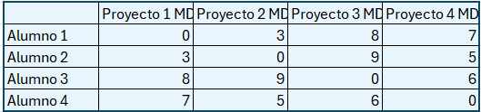

Orden de una matriz
Lea y complete
Lea y complete
Tenemos las siguientes notas de 4 alumnos en cada una de las partes de la asignatura de Matemáticas Dinámicas, ordenadas de la forma siguiente:

A partir de esta matriz responde a las siguientes preguntas:
Falso
Tenemos 4 filas y 4 columnas, por tanto, se trata de una matriz cuadrada.
Falso
Las matrices diagonales tienen todos los elementos nulos, salvo al menos uno en diagonal principal.
Verdadero
Hay simetría respecto a la diagonal principal.
Verdadero
Al igual que el \(a_{3,4}\).
Obra publicada con Licencia Creative Commons Reconocimiento No comercial Compartir igual 4.0